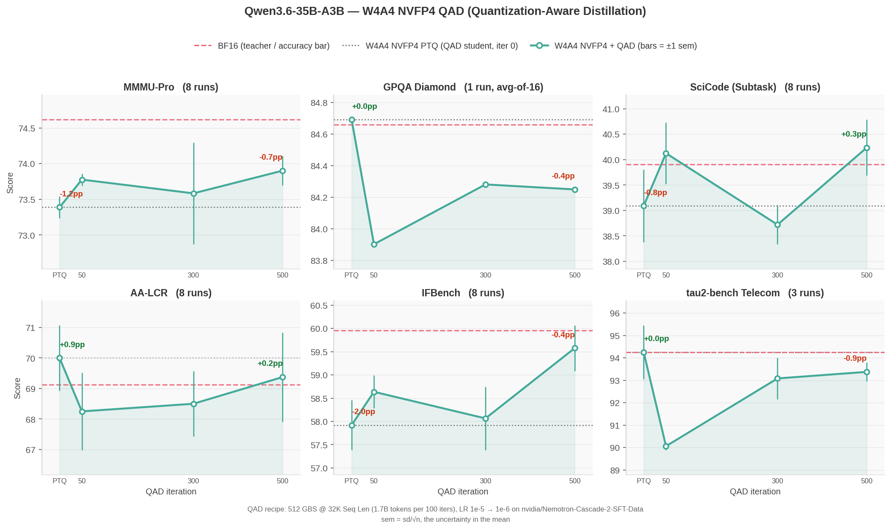

Recovering W4A4 NVFP4 Accuracy with Quantization-Aware Distillation#
- Author:
Model Optimizer Team
- Date:
September 16, 2026
- Tags:
quantization, nvfp4, w4a4, qad, distillation, megatron-bridge
Weight-only NVFP4 does not make this model faster. On Blackwell, a BF16 activation forces vLLM onto the Marlin dequant-to-BF16 fallback, which never reaches the FP4 tensor cores: W4A16 measured slower than BF16 in 10 of 12 shapes. Quantizing activations as well (W4A4) unlocks those kernels and beats BF16 in 9 of 12 shapes, but costs accuracy that post-training quantization alone does not recover. Quantization-Aware Distillation (QAD) is what closes that gap.
We ran the full flow on Qwen/Qwen3.6-35B-A3B with Megatron-Bridge: W4A4 NVFP4 PTQ, then 500 QAD iterations against the BF16 teacher, evaluated across six benchmarks. The complete reproduction steps, configs and recipe are in the tutorial.
Highlights#
W4A4 is the configuration worth targeting. It beats BF16 in 9 of 12 measured shapes (up to 1.30x) and shrinks the checkpoint from 67 GiB to 22 GiB (3.1x). Weight-only W4A16 is slower than BF16 in 10 of 12.
Only 2 of 6 benchmarks lost measurable accuracy to W4A4, so those are the only two where QAD has anything to recover.
IFBench is fully recovered. PTQ costs 2.6 pp; 500 QAD iterations return the model to statistical parity with BF16.
MMMU-Pro recovers about 40% of its deficit and retains a measurable gap — the blend is text-only, and MMMU-Pro is multimodal.
Repeat counts matter more than expected. At 3 repeats one benchmark showed a 3 pp swing that vanished at 8, and IFBench’s real gain was invisible until 8.
Results#
{kind=link}

Figure 1. W4A4 NVFP4 accuracy vs. QAD training iteration, Qwen3.6-35B-A3B. Each panel starts at the PTQ student (x=0) and follows it through 500 QAD iterations. The dashed line is the BF16 teacher; the dotted line is the PTQ starting point. Bars are ±1 sem.
Accuracy, mean ± sem across repeats:
Model |
MMMU-Pro |
GPQA-D |
SciCode |
AA-LCR |
IFBench |
tau2-bench |
|---|---|---|---|---|---|---|
BF16 (teacher) |
74.6 ± 0.2 |
84.7 |
39.9 ± 0.6 |
69.1 ± 0.8 |
60.0 ± 0.5 |
94.2 ± 1.0 |
W4A4 NVFP4 PTQ |
73.4 ± 0.2 |
84.7 |
39.1 ± 0.7 |
70.0 ± 1.1 |
57.9 ± 0.5 |
94.2 ± 1.2 |
+ QAD 500 iters |
73.9 ± 0.2 |
84.2 |
40.2 ± 0.6 |
69.4 ± 1.5 |
59.6 ± 0.5 |
93.4 ± 0.4 |
Where QAD Helps#
Only IFBench and MMMU-Pro show a W4A4 deficit larger than run-to-run noise. On the other four, W4A4 is effectively lossless and QAD neither helps nor hurts.
Benchmark |
W4A4 PTQ vs BF16 |
After 500 QAD iters |
Outcome |
|---|---|---|---|
IFBench |
−2.6 pp |
−0.3 pp |
Recovered to BF16 parity |
MMMU-Pro |
−1.2 pp |
−0.7 pp |
~40% recovered, gap remains |
Throughput#
Measured with AIPerf against a served vLLM endpoint on 4x GB200, three ISL/OSL shapes at four concurrencies each (output tokens/s):
Shape (ISL/OSL) |
Conc. |
BF16 |
W4A16 NVFP4 |
W4A4 NVFP4 |
W4A4 / BF16 |
|---|---|---|---|---|---|
decode 128/2048 |
128 |
17,636 |
15,222 |
20,076 |
1.14x |
chat 8000/1000 |
32 |
3,649 |
2,373 |
4,079 |
1.12x |
prefill 32000/400 |
128 |
854 |
1,092 |
1,107 |
1.30x |
W4A4 loses to BF16 only at concurrency 1, by a near-constant 0.87–0.88x across all three shapes. That is fixed per-call overhead in the FP4 kernel path, which batch-1 decode has no arithmetic intensity to amortize — not a recipe knob.
What It Costs#
QAD dominates: 500 iterations at 32K sequence length on 32 nodes (128 GB200) took 5.7 hours, about 735 GPU-hours. PTQ is 9 minutes and the HF export a few more. Evaluating one checkpoint across all six benchmarks at the repeat counts above is roughly 100 GPU-hours.
Learn More#
The tutorial has the full reproduction path — data blend, PTQ recipe, QAD command, export, and one NeMo Evaluator config per benchmark — plus the parallelism constraints QAD imposes on this model and what we would try next to close the remaining MMMU-Pro gap.